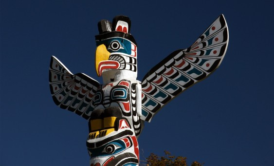

Introduction
Tribal sovereignty, as it relates to American Indians and Alaska Natives, refers to their right to self-government. With a few notable exceptions, the United States Constitution recognizes Indian tribes as independent governments with the same power to conduct their own internal affairs as the federal and state governments. The Northwest Tribes and Washington State have a unique relationship in terms of resource management, conservation, and stewardship. Long before Alaska became a state and European settlers began to arrive, indigenous people lived in this region. The mix of native cultures, languages, and art is what makes the Pacific Northwest unique. Self-government is essential if tribal communities are to continue protecting their unique traditions and identities. In Indian Country, tribes are inherently given the authority to decide on a wide range of issues that affect their members.
Native Nations

In the United States, there are 574 federally recognized Native Nations, also referred to as tribes, nations, bands, pueblos, communities, and native villages. About 229 of these diverse nations in terms of race, culture, and language reside in Alaska; tribes recognized by the federal government also exist in the other 35 states. There are currently 29 tribal governments in Washington State that the federal government recognizes, of which 21 are treaty nations and 8 are tribes created by executive order. In addition, the Columbia River and/or the Blue Mountains are the subject of treaty claims from three tribes outside of Washington.
Tribes as Countries
Nearly every issue that affects Indian Country has its roots in the political situation of tribal nations. If tribal communities are to maintain the protection of their distinctive traditions and identities, self-government is crucial. Tribes are naturally empowered to make decisions on anything that affects their members as well as a variety of other matters in Indian Country. The authority to regulate, safeguard, and improve the health, safety, and welfare of tribal members inside tribal territory is the essence of tribal sovereignty. Tribal governments continue to have the authority to establish their own governmental frameworks and enact legislation using tribal courts and police forces. These inalienable rights are exercised by the governments through the creation of their unique forms of government, determination of citizenship, creation of civil and criminal laws for their countries, imposition of taxes, granting of licenses, enforcing of regulations, and upholding and using the authority to eject criminals from tribal lands. The development and upkeep of fundamental infrastructure, such as housing, roads, bridges, sewers, public buildings, telecommunications, broadband and electrical services, and solid waste treatment and disposal, are also the responsibility of tribal governments on tribal lands (NCAI). Additionally, tribal governments are also in charge of a wide range of governmental activities.
Key Terms
- Tribal Sovereignty
- Self-Government
- Native Nations
- Tribal Lands